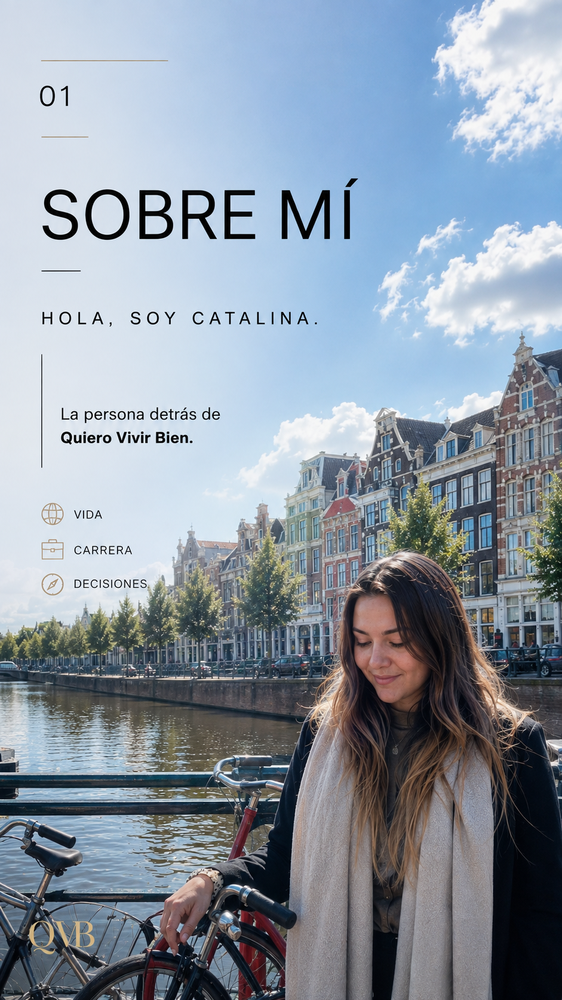

Pontificia Universidad Católica de Chile
LIFE & CAREER COACHING · BY CATALINA CEA
Una vida
y una carrera
que se sientan tuyas.
No necesitas tener todas las respuestas. A veces necesitas el espacio, las preguntas y las herramientas correctas para encontrar tu próximo paso.
01 / CLARIDAD¿Dónde estoy?
02 / DIRECCIÓN¿Qué quiero?
03 / ACCIÓN¿Cuál es mi próximo paso?
QVB · TU MAPA
No voy a darte
empieza por ti ↗
No voy a darte
un mapa.
Vamos a construir el tuyo.
ESCUCHAREXPLORARDEFINIRACTUAR
VIDA ✦ CARRERA ✦ DECISIONES ✦ MUNDO ✦ CLARIDAD ✦ ACCIÓN
01 · SOBRE MÍ

VIDA · CARRERA · DECISIONESHOLA, SOY CATALINA.
La persona detrás de
Quiero Vivir Bien.
Soy Life & Career Coach y mi trayectoria se ha construido entre la cooperación internacional, la educación superior, la investigación y proyectos con impacto.
Creé QVB porque creo que una carrera no debería construirse separada de la vida que quieres vivir. Mi rol no es decidir por ti: es ayudarte a hacer mejores preguntas, ordenar posibilidades y transformar claridad en acción.
“No estoy aquí para decirte qué hacer con tu vida. Estoy aquí para ayudarte a descubrir qué quieres hacer tú con ella.”
MI CAMINOFormación + experiencia
Formación + experiencia
que entra a la sesión.
Universidad Católica San Antonio de Murcia
Goodwill Industries International
Experiencia en educación superior, CEPAL–ONU y Cruz Roja Chilena.
¿QUÉ TRAIGO YO?No llego solo
No llego solo
con preguntas.
CV, LinkedIn, entrevistas, inserción laboral, reinvención y estrategia de búsqueda.
Experiencia con universidades, becas, oportunidades de estudio y contextos multiculturales.
Cartas de motivación, networking, inglés profesional y preparación de entrevistas en inglés.
IA aplicada, herramientas digitales, upskilling y nuevas competencias para tu próximo paso.
Investigación, publicaciones, formulación de proyectos, fondos y preparación de postulaciones.
Yo te ayudo a trazar el camino.
02 · RECURSOS
EMPIEZA GRATIS
Primero,
ordena tus ideas.
Recursos QVB para pensar, escribir, decidir y avanzar a tu ritmo.
QVB WORKBOOKMI MAPA
DE CARRERA
DE CARRERA
QVB TOOLMI
BRÚJULA
BRÚJULA
GRATIS
QUIERO VIVIR BIEN
¿Y AHORA
QUÉ?
QUÉ?
Una guía para descubrir tu próximo paso cuando sabes que quieres algo distinto.
CLARIDAD · VIDA · CARRERA10–15 páginas de ejercicios, reflexión y herramientas prácticas.
Quiero mi guía gratis →03 · SESIONES
ELIGE TU PRÓXIMO PASO
No todos necesitamos
el mismo tipo de apoyo.
Empieza con una conversación, resuelve algo puntual o trabaja conmigo en un proceso.
SEPTIEMBRE04
PRIMER ENCUENTROCATALINA + TÚ20–30 MIN · ONLINE
GRATIS
Conversemos antes
Conversemos antes
de que compres.
Me cuentas dónde estás y vemos qué tipo de apoyo hace sentido para ti.
Reservar primer encuentro →01
SESIÓN PUNTUAL
Sesión Claridad
Una duda. Una decisión. Un próximo paso.
- Ordenamos lo que estás viviendo
- Exploramos perspectivas
- Sales con próximos pasos concretos
60 MINONLINE1:1
$9.990PRECIO LANZAMIENTO
→
02
3 SESIONES
Mi Próximo Trabajo
Dirección · perfil · búsqueda · postulación · entrevista.
- Define qué oportunidades buscar
- Trabaja CV, LinkedIn y estrategia
- Prepárate para postular y entrevistar
PRIMER TRABAJOCAMBIO
$12.990PROCESO COMPLETO
→
03
4 SESIONES
Reinventa tu Carrera
Fortalezas · opciones · skills · formación · IA · plan.
- Mapea lo que ya tienes
- Explora caminos y brechas
- Construye un plan de reinvención
EXPLORARREINVENTAR
$19.990PROCESO COMPLETO
→
04
3 SESIONES
Da el Salto Internacional
Explorar · elegir · preparar · postular.
- Explora becas, estudios y oportunidades
- Revisa requisitos y fortalece tu perfil
- Prepara una estrategia de candidatura
BECASESTUDIOSMUNDO
$29.990PROCESO COMPLETO
→
CÁPSULAS QVBPick what
Pick what
you need.
Apoyo puntual. Próximo paso concreto.
04 · FAQ
ANTES DE EMPEZAR
Preguntas
que quizá tú
también tienes.
No necesitas llegar sabiendo exactamente qué necesitas.
05 · AGENDA AQUÍ
PRIMER ENCUENTRO GRATIS
Agenda tu primer
encuentro sin costo.
Una conversación breve para contarme dónde estás, qué te gustaría trabajar y ver juntas cuál podría ser la mejor forma de empezar.
20–30 MINONLINE1:1SIN COMPROMISO
La primera conversación es gratis. Si después quieres continuar, eliges la sesión o proceso que haga sentido para ti.
QVB CALENDAR
Disponibilidad semanal
LUN
19:00
21:00
MAR
19:00
21:00
MIÉ
19:00
21:00
JUE
19:00
21:00
VIE
18:00
20:00
SÁB
09:00
17:00
30
MIN
PRIMER ENCUENTRO QVB
Catalina + Tú
GRATIS
Cuéntame dónde estás. Vemos juntas cuál podría ser tu mejor próximo paso.